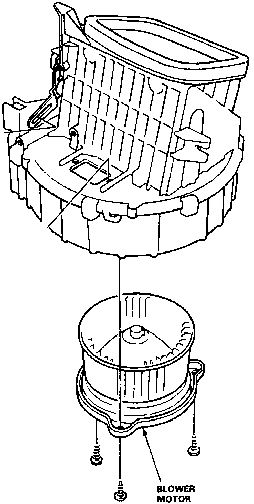

Blower Motor: Service and Repair
1. On models equipped with radio coded theft protection system, refer to Vehicle Damage Warnings for system disarming and arming procedures.2. On models less A/C, remove wire harness clips from heater duct, then remove four screws and duct.
3. On models with A/C, remove evaporator assembly.
Fig. 16 Blower Motor Replacement:

4. Remove three screws securing blower motor to blower unit, then lower motor from unit, Fig. 16.
5. Reverse procedure to install.